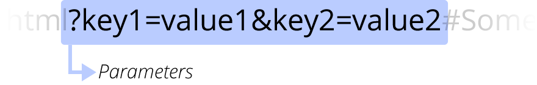

Jasmin Rubinovitz
A web browser (commonly referred to as a browser) is a software application for accessing information on the World Wide Web. Each individual web page, image, and video is identified by a distinct URL, enabling browsers to retrieve and display them on the user's device.
So far, we have talked about things happening in the browser, on the client side, using HTML, CSS and JavaScript.
We have not talked about storing data to be used over time
Wikipedia: a server is a computer program or a device that provides functionality for other programs or devices, called "clients".
Examples for Server Functionality
Goal for this semester: Be good at front-end, Understand Back-end concepts in order to know what you don't know
We can think about the server as a piece of code that is running on a computer somewhere.
As the browser is sending requests to the server, different functions are called and values are returned to the browser.
Server programs can be written in many different programming languages, including JavaScript. (Using Node.js)
AJAX stands for "asynchronous JavaScript and XML" (which is not what it does). It is the term that we use to represent what you do when a website requests more information from a server after the page has loaded.
The ides: Only update a certain section of a page at a certain time with data from a server-side script (most of the times from the same domain and some times from a different domain)
We're going to use AJAX to request data from a Server or an API.
An API is application programming interface, but what we mean we say API in this context is it's a public server that will allow us to make AJAX calls and it will respond. Most big websites will have some sort of public API, like Twitter for example. There are many public APIs.
The API we're going to use is dog.ceo. It's a simple, silly API that will give you back random pictures of dogs.
JSON stands for JavaScript Object Notation, and it's a very common way to exchange data over the Internet because it's machine readable but also pretty readable to humans.
For example, the dogs API returned a response similar to this:
{
"status": "success",
"message": "https://images.dog.ceo/breeds/affenpinscher/n02110627_11783.jpg"
}
This is technically javascript
online JSON parsernamesSelected = JSON.stringify(listItems);datasets = JSON.parse(txt);document.cookie = updatedCookie; where updatedCookie is a string of form key=valueallCookies = document.cookie;document.cookie;expires=date-in-GMTString-format to cookie. Example: ";expires=Sat, 16 May 2009 18:40:22 GMT"(localStorage | sessionStorage).setItem()(localStorage | sessionStorage).getItem()(localStorage | sessionStorage).deleteItem()We can also use url variables to pass data and information to our web page.
URL variables (also called parameters) are added after the address, there is a question mark at the start, followed by a list of key/value pairs separated with the & symbol.
http://www.example.com/path/to/myfile.html?key1=value1&key2=value2#SomewhereInTheDocument

url_parameters.html
Continue working on your final projects. We will present them on our last class on 12/17
Add CSS and JavaScript to control the look and behavior of the content of your story.
Submit a weekly progress report and let me know if you have any questions